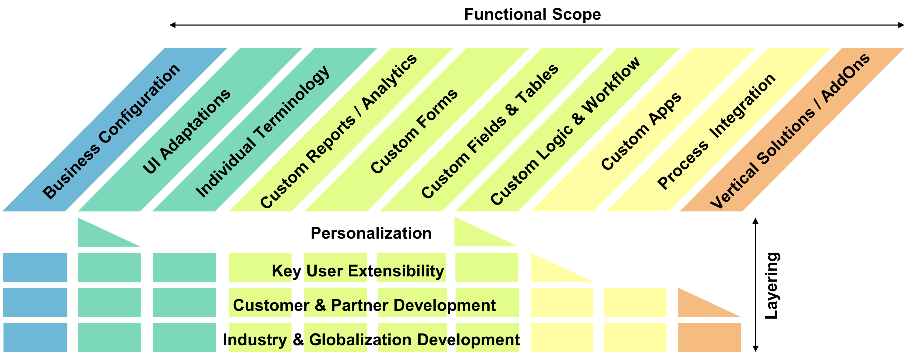
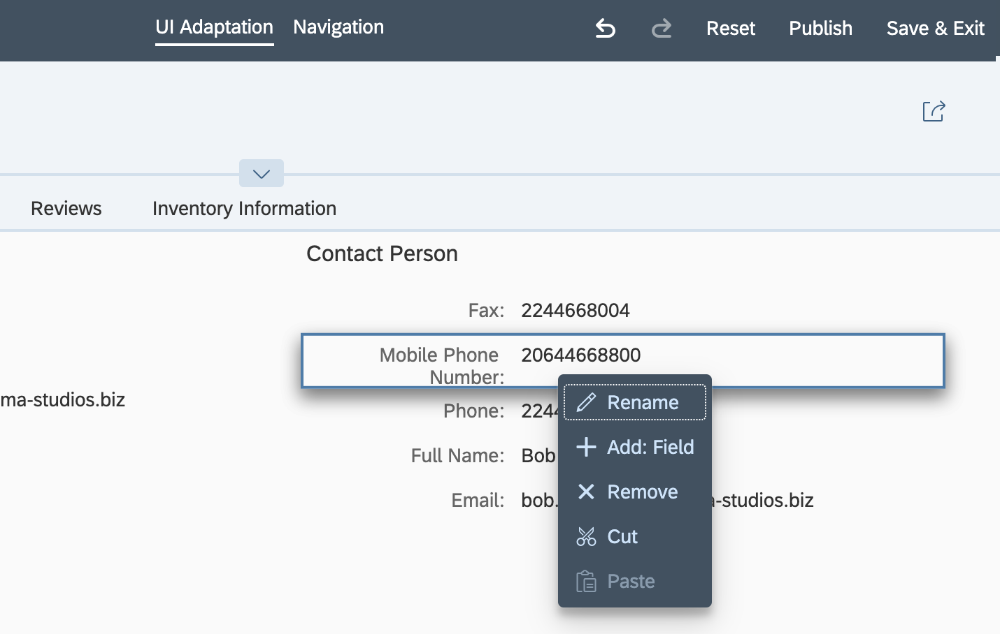
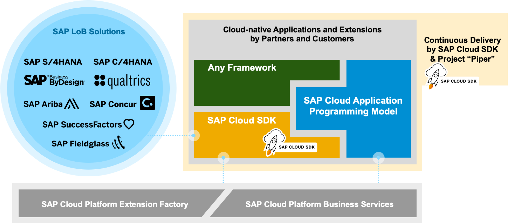

Gregor Wolf
SAP S/4HANA (Cloud) Extensibility
In-App and Side-by-Side

|
gregorwolf |
|
|
@gregorw@chaos.social |
|
|
@wolf_gregor |
SAP TechEd 2018, Barcelona:
“Keep the Core Clean”
Björn Goerke,
Former SAP CTO & President SAP Business Technology Platform
S/4HANA and Fiori Foundation Functions
- Personalization
- User Assistance
- Search
- Notifications
- Embedded Analytics
- SAP Conversational AI (Previously: CoPilot)
Personalization
- Specify search filters
-
Adjust the columns shown
in the list report - Save this settings in a view or tile
User Assistance

- End User UI: SAP Companion
- Custom content with SAP Enable Now
Search
Notifications

Embedded Analytics
Capabilities for the business user
- Smart Business KPIs
- Overview Pages
- Analytical List Pages
- In-App Analytics and ML
- Multidimensional Reports
- Dashboards (Powered by SAP Analytics Cloud)
Embedded Analytics
Overview Pages
Embedded Analytics
Analytical List Pages
Embedded Analytics
Learn more in the OpenSAP Course:
SAP S/4HANA Embedded Analytics
SAP Conversational AI (Previously: CoPilot)
According to SAP Discovery Center "RETIRING SOON": 31st June 2023.

Extensibility Spectrum
Runtime Adaptation (RTA) - Demo
Custom Fields
Example from the SAP Extensibility Explorer:Enable Custom Fields in the Purchasing Process
Custom Business Logic

Analytical Apps
Find them in the
Fiori Apps Library
by applying the filter "SAP Fiori - Analytical"
Side-by-side Architecture
Side-by-side Extension Application Layers

SAP Cloud SDK & CAP
ABAP Cloud on SAP BTP and on SAP S/4HANA
Availability of ABAP Cloud
SAP Business Technology Platform,
ABAP Environment

Key take aways
- "Keep the Core clean"
- Try to use Customizing and In-App-Extensibility as long as possible
- Plan Side-by-Side extensibility in detail
Thank you
Your questions ...
Contact
Gregor Wolf,
Computerservice Wolf
gregor@computerservice-wolf.com
@wolf_gregor
| Presentation | Business Card | ||
|---|---|---|---|

|
Links
- SAP Community Blog Post: SAP S/4HANA Extensibility: A Learning Journey
- Presentation: S/4HANA In-App Extensibility Overview
- help.sap.com: SAP S/4HANA 2022 Extensibility
- Enabling Key User Adaptation
- SAP Extensibility Explorer for SAP S/4HANA Cloud
- Tutorial Group: Create a Custom UI for S/4HANA Cloud
- SAP Fiori for S/4HANA